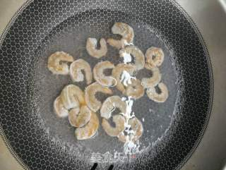
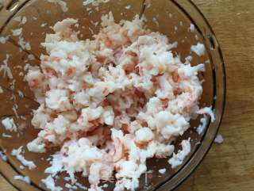
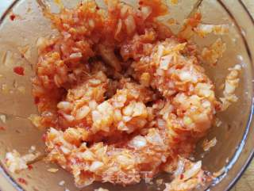
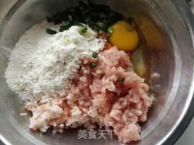
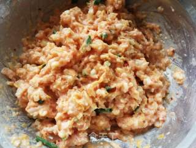
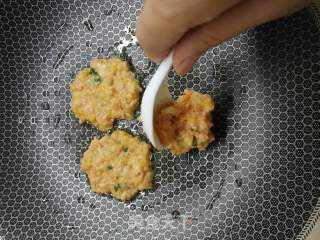
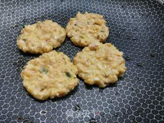
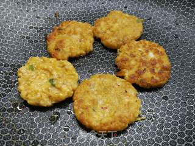

“我觉得韩国泡菜煎饼是我吃过的口味最特别的煎饼，有泡菜的酸辣开胃，有虾仁的香味，还有肉跟面粉结合的那种香。
看起来不惹眼，但是吃了一块绝对想来第二块。喜欢吃泡菜味的朋友千万别错过。”
“我觉得韩国泡菜煎饼是我吃过的口味最特别的煎饼，有泡菜的酸辣开胃，有虾仁的香味，还有肉跟面粉结合的那种香。
看起来不惹眼，但是吃了一块绝对想来第二块。喜欢吃泡菜味的朋友千万别错过。”
①猪肉打成泥，用少量料酒和姜末腌制15分钟；
②虾去壳挑出虾线，用料酒腌制15分钟去腥；接着将虾仁放沸水灼烫几秒；
③然后将虾仁剁成比虾泥粗一点的小丁；
④辣白菜切碎一些；
⑤把辣白菜、虾和肉末一起放入料理碗内，打入一个鸡蛋，加入面粉和葱花；
⑥搅拌均匀；（辣白菜味道已经很重，所以不需要再添加其他辅料了）
⑦煎锅中加入少量油烧热，用汤匙舀适量入锅；
⑧小火煎一面；
⑨煎至两面金黄就可以啦。